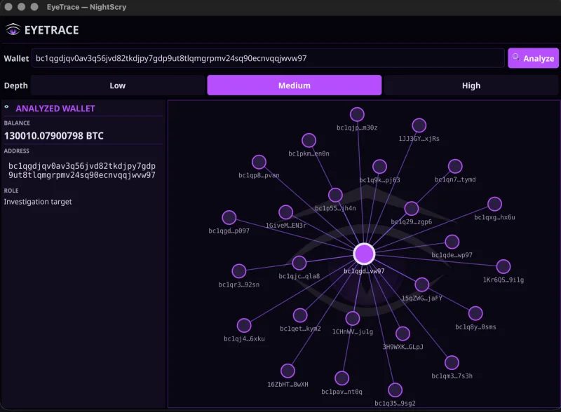

Desktop Reverse Engineering
Analisi statica & dinamica di binari Windows, macOS e Linux: meccanismi anti-tamper, protezioni, licensing e comportamento in stile malware.
Laboratorio indipendente di ricerca in sicurezza informatica. Reverse engineering, vulnerability research e OSINT — studio come si rompono i sistemi e pubblico tutto in chiaro.
Studio il comportamento degli attaccanti e le debolezze dei sistemi reali — poi rilascio strumenti e report in chiaro.
La cybersecurity italiana è un’altra cosa.
Un apostrofo inviato a una web application ha restituito un SQL ERROR. Censys ha poi mostrato lo stesso software su 36 installazioni esposte. Nessun exploit, nessun dato toccato: mi sono fermato all’errore e ho documentato tutto.

Tracer multi-chain di wallet: riconosce la chain dal solo indirizzo tramite checksum crittografico e mappa le controparti come grafo interattivo.
Sorgente su GitHub →Ricognizione passiva su un dominio: subdomain enumeration, servizi esposti, fingerprinting e leak da fonti pubbliche, aggregati in un report.
Guarda l’anteprima ↓Dato un dominio target: subdomain enumeration da Certificate Transparency e DNS, servizi esposti via Censys/Shodan, fingerprinting tecnologico, software EOL e leak — tutto passivo, tutto aggregato in un report.
RDP esposto203.0.113.24:3389
Apache 2.4.29 (EOL)vpn.example-corp.it
Admin panel pubblicoadmin.example-corp.it
12 account in data breach@example-corp.it
Bucket S3 listabilestatic-example-corp
Anteprima illustrativa: dominio e dati sono di esempio. Solo fonti pubbliche, nessuna scansione attiva.
Le superfici su cui concentro la ricerca.
Analisi statica & dinamica di binari Windows, macOS e Linux: meccanismi anti-tamper, protezioni, licensing e comportamento in stile malware.
Teardown di app Android & iOS: root/jailbreak detection, SSL pinning, IPC, storage insicuro e instrumentation a runtime secondo OWASP MASTG.
Classi di vulnerabilità web, injection e falle di business logic — studiate su software reale ed esposto, documentate senza sfruttarle.
Ricognizione da fonti aperte, mappatura di superfici esposte e tracciamento di transazioni on-chain — la base di EyeTrace e del report Italian Cybersecurity.
Ogni ricerca segue lo stesso percorso: osservare, capire, dimostrare, pubblicare in modo responsabile.
Fonti aperte, motori come Censys e Shodan, mappatura di ciò che è esposto pubblicamente.
Decompilazione, instrumentation e fuzzing. Il target compreso dall’interno.
Dimostrare la debolezza nel modo minimo possibile — senza mai toccare dati di terzi.
Disclosure responsabile, poi report e tool rilasciati in chiaro per la community.
Nessun cliente da accontentare: seguo le domande interessanti, ovunque portino.
Mi fermo all’evidenza. Nessun dato di terzi toccato, disclosure responsabile.
Tool e report pubblicati in chiaro, perché la conoscenza serve a chi difende.
Smontare, capire, documentare. Restare davanti alle minacce emergenti.
Il mio laboratorio: strumenti collaudati più automazione sviluppata in casa.
Esperienza di penetration testing su sistemi bancari (web application, API). Reverse engineering su desktop e mobile, OSINT. NightSCRY è il mio laboratorio di ricerca.
LinkedInScrivimi per collaborazioni, segnalazioni di vulnerabilità o domande sui miei report.